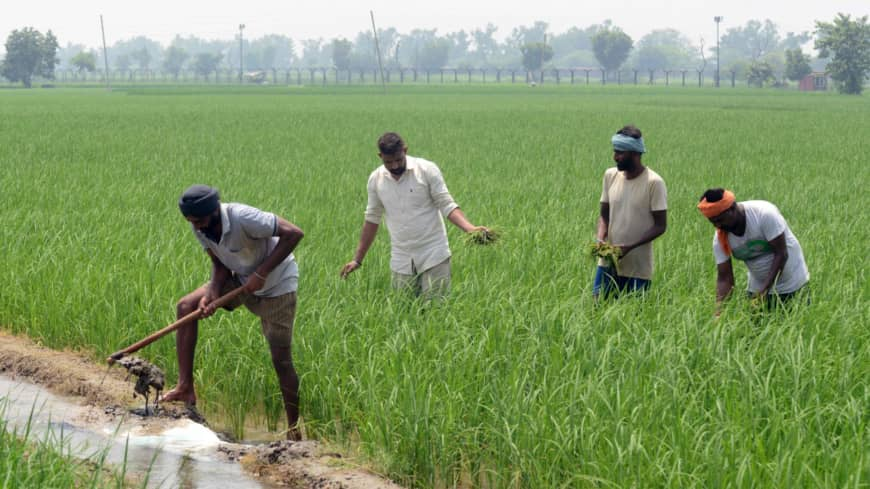
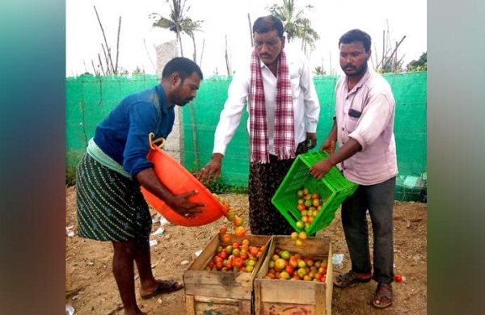

Business is booming for farmers selling to direct
Description, Jan 14, 2021
Some farm businesses are reporting a 400 percent increase in sales as more consumers seek out their farmers
Farmers selling direct or through online networks are scrambling to keep up to surging demand from new customers, all the while adhering to safety protocols to protect their families and workers.
Dragon fruit farming takes wing in West Bengal
Description, Jan 14, 2021

A section of farmers in West Bengal is experimenting with dragon fruit farming for better prospects of income generation.
Toppo has over 123 plants of dragon fruit and she sells the fruit and stem cuttings that are used as saplings for the fruit. According to regional agricultural experts, she is the first woman to have started dragon fruit farming in West Bengal.
Farmer in Andhra Pradesh success story by growing rain-fed tomato crop
Description, Jan 14, 2021
After suffering huge losses by cultivating groundnut in his 10-acre dry land, he switched to cultivating rain-fed tomato crop to get profits.
Ravindra Reddy, a farmer from Molakalacheruvu in the Chittoor district, is reaping rich dividends and has become an inspiration to many. After suffering huge losses by cultivating groundnut in his 10-acre dry land, he switched to cultivating rain-fed tomato crops to get profits.
IIT alumnus helps Bihar farmers keep thieves at bay with this gadget
Description, Jan 14, 2021

The device is artificial intelligence-driven and has computerised sensors. It also is equipped with night-vision cameras.
IIT-Kharagpur alumnus Ajit Kumar has developed Farm Surveillance-Cum-Animal Scarer (FSCAS), a computerized electronic sensor device, that keeps a watch on the agricultural field and Artificial Intelligence (AI) to send an alert on sighting an intruder in the field.
Popular Post
Some farm businesses are reporting a 400 percent increase in sales as more consumers seek out their farmers
A section of farmers in north Bengal is experimenting with dragon fruit farming for better prospects of income generation.
After suffering huge losses by cultivating groundnut in his 10-acre dry land, he switched to cultivating rain-fed tomato crop to get profits.